一 jenkins介绍以及准备
我们可以利用jenkins＋docker完成持续集成。如果说docker是基础，jenkins就像是灵魂。
准备工作，在前端项目中要有： 1. 相关的cordova配置文件－config.xml 2. 相关的签名文件 3. 修改config.xml中版本号为模版{version},如下
<widget id="com.XXX.XXX" version="{version}" xmlns="http://www.w3.org/ns/widgets" xmlns:cdv="http://cordova.apache.org/ns/1.0">
二 新建任务
- 点击新建 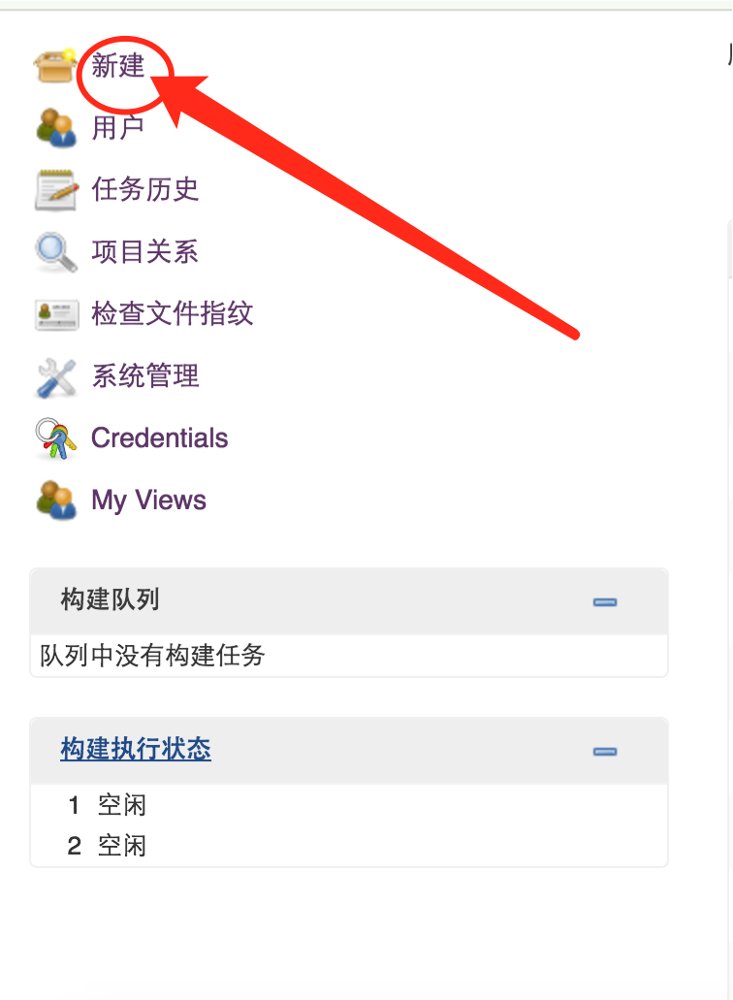
- 输入项目名，选择构建一个自由风格的软件项目

三 参数化构建
- 选择参数化构建过程，允许灵活构建 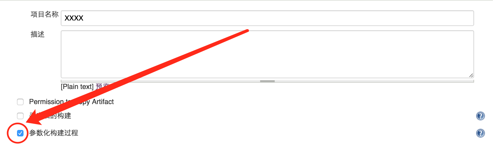
- 新增参数 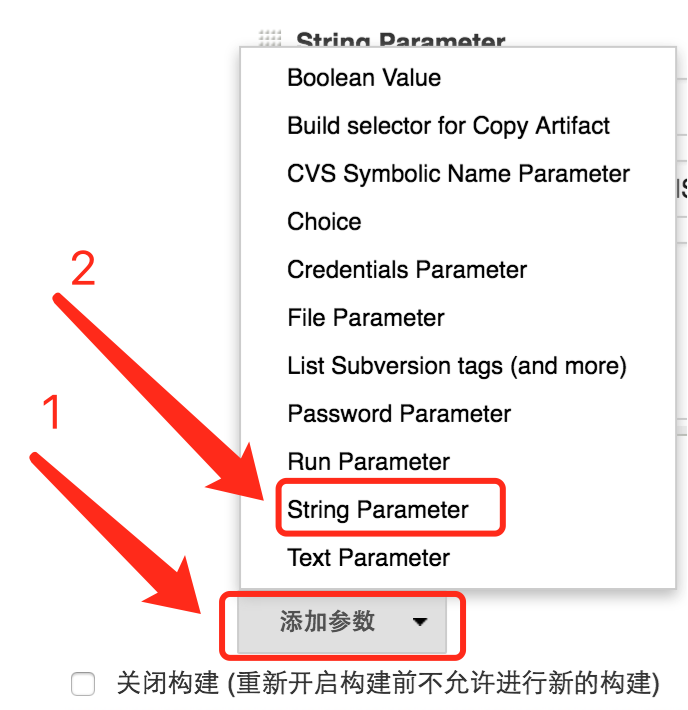
- 设置应用版本号 示例：
version
0.0.0
应用版本号（数字.数字.数字）
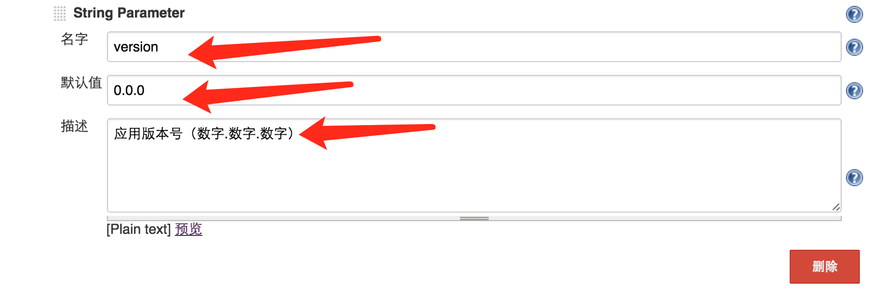 4. 设置grunt构建命令
command
build
grunt 构建命令
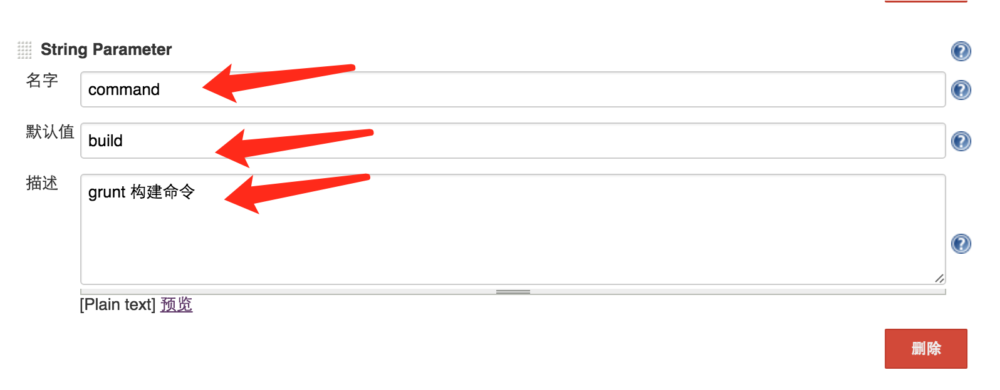 5. 设置svn路径
svnPath
http://XX.XX.XX.XX/svn/VIS/VISAPP/branches/dev
项目svn路径
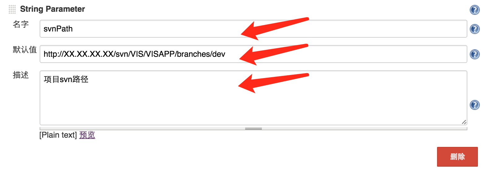
四 配置构建项
- 点击增加构建步骤 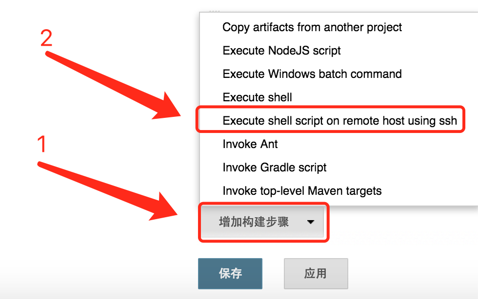
- 配置构建脚本 构建脚本有两种： 第一是测试脚本，不需要配置签名 示例：
docker exec -i cordova /data/build.sh $svnPath $command XXXX XXXXCordova buildConfig/cordova/android/test/config.xml $version
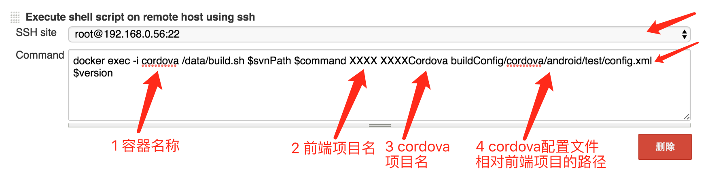 第二是正式脚本，需要配置签名 示例：
docker exec -i cordova /data/build.sh $svnPath $command XXXX XXXXCordova buildConfig/cordova/android/test/config.xml $version buildConfig/keyStore/android/formal/my-release-key.keystore android-armv7-release-unsigned.apk XXXX alias_name
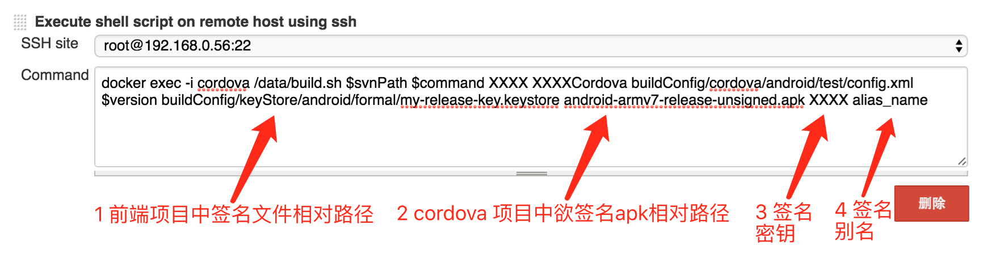 3. 配置拷贝生成结果脚本 示例：
docker cp cordova:/data/XXXXCordova/platforms/android/build/outputs/apk/android-armv7-debug.apk build.apk
docker cp build.apk myjenkins:/var/jenkins_home/workspace/XXXX/build.apk
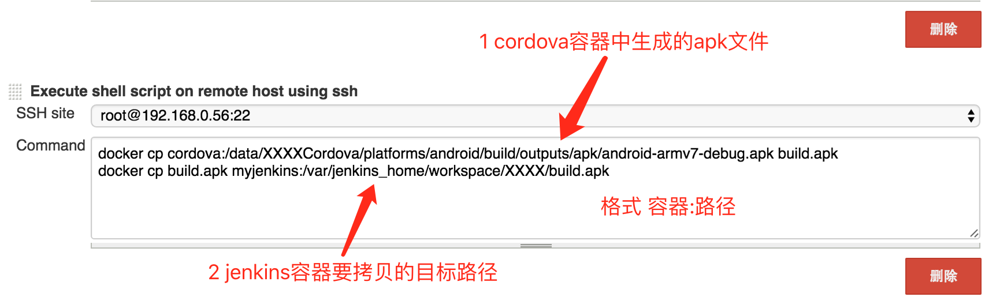
五 配置下载文件位置
- 增加构建后操作步骤 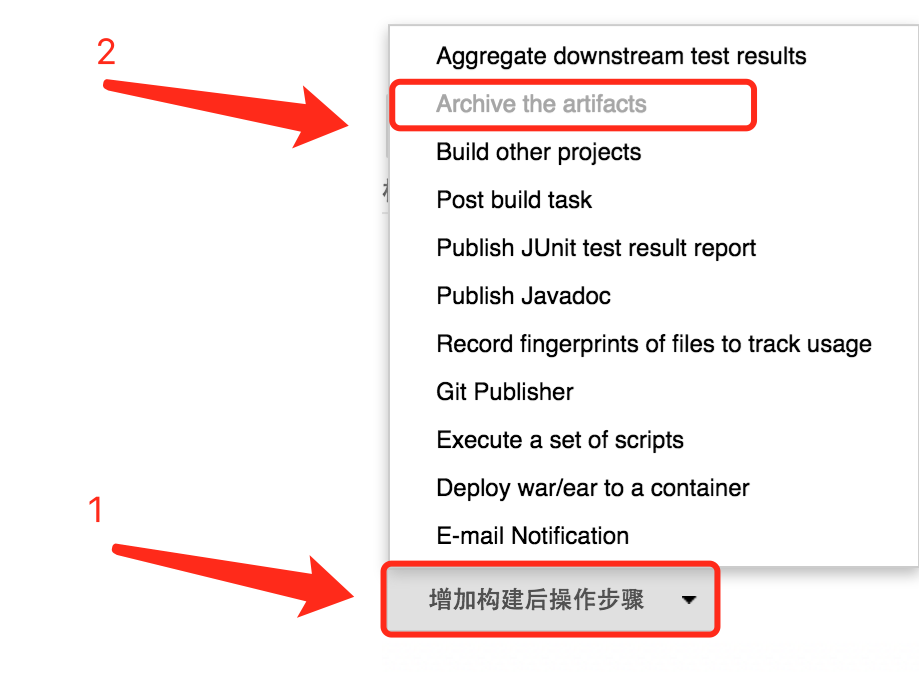
- 配置下载文件位置（相对于任务工作目录的路径） 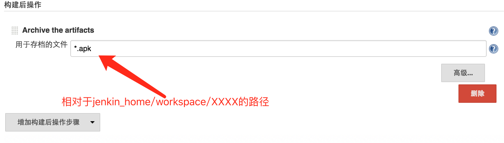
- 最后，点击保存即可